РАСПРЕДВАЛ > СНЯТИЕ |
| 1. ОТСОЕДИНИТЕ ПРОВОД ОТ ОТРИЦАТЕЛЬНОГО ВЫВОДА АККУМУЛЯТОРНОЙ БАТАРЕИ |
| 2. СНИМИТЕ НИЖНЮЮ НАКЛАДКУ ПЕРЕДНЕГО БАМПЕРА |
Освободите фиксатор, выверните 5 болтов и снимите нижнюю облицовку переднего бампера.
| 3. СНИМИТЕ ЗАЩИТУ КАРТЕРА ДВИГАТЕЛЯ № 1 В СБОРЕ |
Выверните 4 болта.
 |
Отсоедините защиту картера двигателя от кузова автомобиля, как показано на рисунке.
| 4. СЛЕЙТЕ МОТОРНОЕ МАСЛО |
Снимите крышку маслоналивной горловины.
Снимите пробку сливного отверстия масляного поддона и слейте моторное масло в резервуар.
Установите новую прокладку и пробку сливного отверстия масляного поддона.
| 5. СЛЕЙТЕ ОХЛАЖДАЮЩУЮ ЖИДКОСТЬ ДВИГАТЕЛЯ |

| *1 | Пробка расширительного бачка | *2 | Пробка радиатора |
| *3 | Пробка сливного крана радиатора | *4 | Пробка сливного крана блока цилиндров |
Ослабьте пробку сливного крана радиатора.
Снимите пробку радиатора и слейте охлаждающую жидкость.
Ослабьте 2 пробки сливных кранов блока цилиндров и слейте охлаждающую жидкость из двигателя.
| 6. СНИМИТЕ ВЕРХНЕЕ УПЛОТНЕНИЕ КРОНШТЕЙНА РАДИАТОРА |
Освободите 13 фиксаторов и снимите верхнее уплотнение кронштейна радиатора.
| 7. ОТСОЕДИНИТЕ ПРОВОД ОТ ПОЛОЖИТЕЛЬНОГО ВЫВОДА АККУМУЛЯТОРНОЙ БАТАРЕИ |
| 8. СНИМИТЕ ПРИЖИМ АККУМУЛЯТОРНОЙ БАТАРЕИ |
 |
Ослабьте 2 гайки и снимите прижим аккумуляторной батареи.
| 9. СНИМИТЕ АККУМУЛЯТОРНУЮ БАТАРЕЮ |
| 10. СНИМИТЕ ЛОТОК АККУМУЛЯТОРНОЙ БАТАРЕИ |
| 11. СНИМИТЕ ДЕКОРАТИВНУЮ КРЫШКУ V-ОБРАЗНОГО ДВИГАТЕЛЯ |
 |
Поднимите переднюю часть декоративной крышки V-образного двигателя, чтобы открепить 2 штифта. Затем снимите 2 крюка декоративной крышки V-образного двигателя с кронштейна, чтобы снять декоративную крышку V-образного двигателя.
| *1 | Штифт |
| *2 | Крюк |
| 12. СНИМИТЕ ШЛАНГ И КРЫШКУ ВОЗДУШНОГО ФИЛЬТРА |
 |
Снимите крышку и шланг воздушного фильтра.
Отсоедините разъем датчика массового расхода воздуха, вакуумный шланг, вентиляционный шланг и 4 хомута.
Ослабьте хомут.
Отсоедините 4 откидных защелки, выверните болт и снимите крышку и шланг воздушного фильтра.
| 13. СНИМИТЕ КОРПУС ВОЗДУШНОГО ФИЛЬТРА В СБОРЕ |
Снимите фильтрующий элемент воздушного фильтра.
| 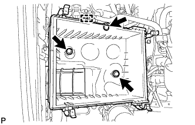 |
Освободите зажим жгута проводов.
Выверните 3 болта и снимите корпус воздушного фильтра.
| 14. СНИМИТЕ ПАТРУБОК РАДИАТОРА № 1 |
| 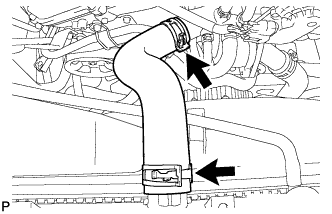 |
| 15. СНИМИТЕ ПАТРУБОК РАДИАТОРА № 2 |
 |
Отсоедините патрубок радиатора от впускного патрубка охлаждающей жидкости.
 |
Открепите зажим и снимите шланг радиатора.
| 16. СНИМИТЕ РАСШИРИТЕЛЬНЫЙ БАЧОК РАДИАТОРА |
 |
Отсоедините шланг расширительного бачка от верхней стороны бака радиатора.
Выверните 3 болта и снимите расширительный бачок радиатора.
| 17. ОТСОЕДИНИТЕ ТРУБКУ МАСЛЯНОГО РАДИАТОРА (для моделей с подогревателем) |
| 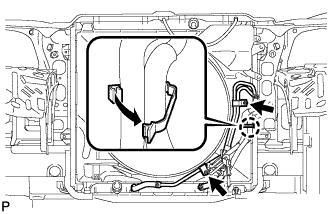 |
Открепите захват, чтобы разомкнуть зажим гибкого шланга, и затем выверните 2 болта и отсоедините патрубок масляного радиатора от кожуха вентилятора.
| 18. ОТСОЕДИНИТЕ ТРУБКУ МАСЛЯНОГО РАДИАТОРА (для моделей с масляным радиатором трансмиссии с воздушным охлаждением) |
| 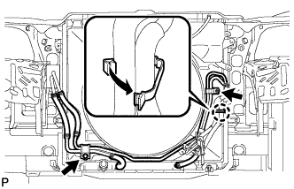 |
Открепите захват, чтобы разомкнуть зажим гибкого шланга, и затем выверните 2 болта и отсоедините патрубок масляного радиатора от кожуха вентилятора.
| 19. СНИМИТЕ КОЖУХ ВЕНТИЛЯТОРА |
| 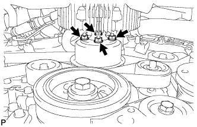 |
Ослабьте 4 гайки, крепящие вентилятор вискомуфты.
Снимите поликлиновой ремень вентилятора и генератора (Нажмите здесь).
| 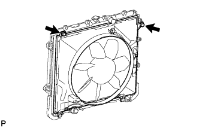 |
Выверните 2 болта, крепящие кожух вентилятора.
Отверните 4 гайки вентилятора вискомуфты, а затем снимите кожух вместе с вентилятором вискомуфты.
Снимите шкив вентилятора с насоса системы охлаждения.
| 20. СНИМИТЕ ВОЗДУШНЫЙ ПАТРУБОК В СБОРЕ (для моделей со вспомогательной системой подачи воздуха в нейтрализатор) |
 |
для ряда 1:
Выверните болт и отсоедините воздушный патрубок от комплекта клапана системы снижения токсичности отработавших газов.
 |
для ряда 2:
Выверните 2 болта и отсоедините воздушный патрубок от комплекта клапана системы снижения токсичности отработавших газов № 2.
| 21. СНИМИТЕ РАСШИРИТЕЛЬНЫЙ БАЧОК НА ВПУСКЕ ВОЗДУХА |
| 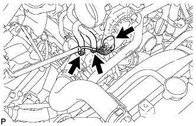 |
Отсоедините разъем корпуса дроссельной заслонки.
Отсоедините перепускной шланг охлаждающей жидкости № 4.
Отсоедините перепускной шланг охлаждающей жидкости № 5.
| 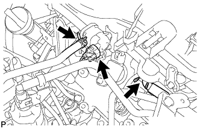 |
Отсоедините питающий шланг паров топлива № 1.
Отсоедините разъем электровакуумного клапана № 1.
Отсоедините шланг вентиляции картера № 1.
 |
Отсоедините 2 хомута шланга отопителя.
 |
Выверните 2 болта и снимите кронштейн корпуса дроссельной заслонки.
 |
С помощью съемника фиксаторов отсоедините зажим жгута проводов.
 |
Выверните 2 болта и снимите стойку расширительного бачка № 1.
 |
Выверните 2 болта и снимите стойку расширительного бачка № 2.
 |
Отверните 2 гайки, выверните 4 болта и снимите расширительный бачок на впуске воздуха
Снимите прокладку.
| 22. СНИМИТЕ ВОЗДУШНЫЙ ПАТРУБОК (для моделей со вспомогательной системой подачи воздуха в нейтрализатор) |
 |
Выверните 2 болта, отверните 2 гайки и снимите воздушный патрубок.
Снимите 2 прокладки с воздушного патрубка.
| 23. СНИМИТЕ ВОЗДУШНЫЙ ПАТРУБОК № 2 (для моделей со вспомогательной системой подачи воздуха в нейтрализатор) |
 |
Выверните 2 болта, отверните 2 гайки и снимите воздушный патрубок № 2.
Снимите 2 прокладки с воздушного патрубка № 2.
| 24. СНИМИТЕ КОМПЛЕКТ КЛАПАНА СИСТЕМЫ СНИЖЕНИЯ ТОКСИЧНОСТИ ОТРАБОТАВШИХ ГАЗОВ (для моделей со вспомогательной системой подачи воздуха в нейтрализатор) |
 |
Отсоедините разъем комплекта клапана системы снижения токсичности отработавших газов.
Отсоедините воздушный шланг № 1 от комплекта клапана системы снижения токсичности отработавших газов.
 |
Отверните 3 гайки и снимите комплект клапана системы снижения токсичности отработавших газов.
| 25. СНИМИТЕ КОМПЛЕКТ КЛАПАНА СИСТЕМЫ СНИЖЕНИЯ ТОКСИЧНОСТИ ОТРАБОТАВШИХ ГАЗОВ № 2 (для моделей со вспомогательной системой подачи воздуха в нейтрализатор) |
 |
Отсоедините разъем комплекта клапана системы снижения токсичности отработавших газов № 2.
Отсоедините воздушный шланг № 3.
| 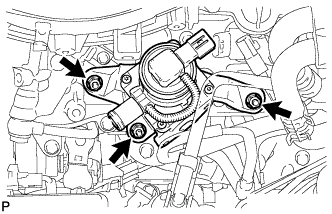 |
Отверните 3 гайки и снимите комплект клапана системы снижения токсичности отработавших газов № 2.
| 26. СНИМИТЕ КАТУШКУ ЗАЖИГАНИЯ В СБОРЕ |
 |
Отсоедините разъемы 6 катушек зажигания.
Выверните 6 болтов и снимите 6 катушек зажигания.
| 27. ОТСОЕДИНИТЕ ЛОПАСТНОЙ НАСОС В СБОРЕ |
 |
Отсоедините 2 разъема.
Отсоедините 2 зажима жгута проводов.
| 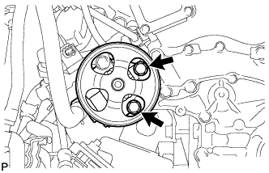 |
Выверните 2 болта и отсоедините лопастной насос.
| 28. СНИМИТЕ ОПОРНЫЙ РОЛИК № 2 В СБОРЕ |
 |
Интегрированного типа:
Выверните болт и снимите опорный ролик № 2.
Для раздельного типа:
Выверните болт и снимите крышку опорного ролика № 2, опорный ролик № 2 и крышку опорного ролика.
| 29. СНИМИТЕ КРОНШТЕЙН ЗАЖИМА ЖГУТА ПРОВОДОВ |
| 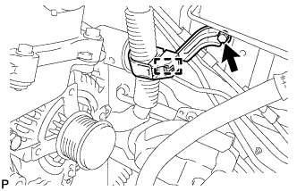 |
Снимите зажим.
Выверните болт и снимите кронштейн зажима жгута проводов.
| 30. СНИМИТЕ ТЕПЛОЗАЩИТНЫЙ ЭКРАН ВЫПУСКНОГО КОЛЛЕКТОРА № 2 |
 |
Отверните 3 болта и снимите теплозащитный экран.
| 31. СНИМИТЕ ГЕНЕРАТОР В СБОРЕ |
 |
Откройте крышку контакта.
Отверните гайку и отсоедините жгут проводов от контакта B.
Отсоедините разъем генератора от генератора в сборе.
| 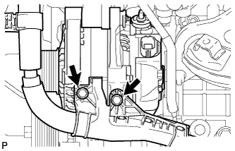 |
Выверните 2 болта и отсоедините жгут проводов.
 |
Отсоедините зажим жгута проводов.
Выверните болт и отсоедините кронштейн генератора.
 |
Выверните 2 болта и снимите генератор в сборе.
| 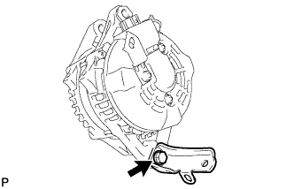 |
Выверните болт и снимите кронштейн генератора.
| 32. СНИМИТЕ ТРУБКУ ЩУПА ПРОВЕРКИ УРОВНЯ МАСЛА |
 |
Снимите щуп проверки уровня масла.
Выверните болт и снимите трубку щупа проверки уровня масла.
Снимите кольцевое уплотнение с трубки щупа.
| 33. СНИМИТЕ ПЕРЕПУСКНОЙ ПАТРУБОК ОХЛАЖДАЮЩЕЙ ЖИДКОСТИ В СБОРЕ (для моделей с масляным радиатором) |
 |
Отсоедините 2 патрубка.
Выверните 3 болта и снимите перепускную трубку охлаждающей жидкости.
| 34. СНИМИТЕ МАСЛОПРОВОД № 1 |
 |
Снимите 2 штуцера маслопровода, левый фильтр гидравлического клапана изменения фаз, 3 прокладки и маслопровод № 1.
| 35. СНИМИТЕ МАСЛОПРОВОД № 2 |
 |
Снимите 2 штуцера маслопровода, правый фильтр гидравлического клапана изменения фаз, 3 прокладки и маслопровод № 2.
| 36. СНИМИТЕ ЗАДНЮЮ КРЫШКУ ГОЛОВКИ БЛОКА ЦИЛИНДРОВ |
 |
Выверните 3 болта и снимите крышку.
| 37. ОТСОЕДИНИТЕ ТОПЛИВОПРОВОД |
Выверните 2 болта и отсоедините топливопровод.
| 38. СНИМИТЕ ЛЕВУЮ КРЫШКУ ГОЛОВКИ БЛОКА ЦИЛИНДРОВ В СБОРЕ |
| 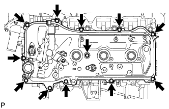 |
Выверните 12 болтов и снимите уплотнительную шайбу, крышку головки блока цилиндров и прокладку.
| 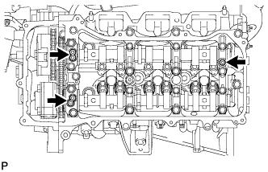 |
Снимите 3 прокладки.
| 39. СНИМИТЕ КРЫШКУ ГОЛОВКИ БЛОКА ЦИЛИНДРОВ В СБОРЕ |
| 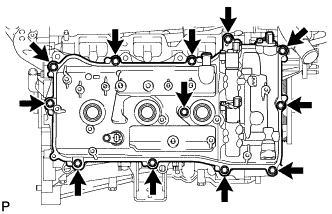 |
Выверните 12 болтов и снимите уплотнительную шайбу, крышку головки блока цилиндров и прокладку.
| 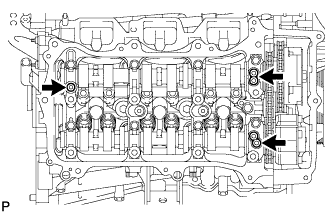 |
Снимите 3 прокладки.
| 40. СНИМИТЕ ПЛАСТИНУ КРЫШКИ ЦЕПНОГО ПРИВОДА ГАЗОРАСПРЕДЕЛИТЕЛЬНОГО МЕХАНИЗМА |
Выверните 4 болта и снимите пластину крышки цепного привода газораспределительного механизма и прокладку.
| 41. УСТАНОВИТЕ ПОРШЕНЬ ЦИЛИНДРА № 1 В ВМТ ТАКТА СЖАТИЯ |
Проверните шкив коленчатого вала и совместите метку на нем с установочной меткой "0" на крышке цепного привода газораспределительного механизма.
Убедитесь, что установочные метки на зубчатых колесах распредвала совмещены с установочными метками на крышках подшипников, как показано на рисунке.
| *A | для ряда 2 |
| *B | для ряда 1 |
| *1 | Метка, нанесенная краской |
Краской нанесите установочные метки на звездочки каждого зубчатого колеса распредвала и звенья цепи № 1.
| 42. СНИМИТЕ НАТЯЖИТЕЛЬ ЦЕПИ № 1 В СБОРЕ |
Поверните коленчатый вал приблизительно на 30° против часовой стрелки, чтобы цепь имела некоторую слабину.
Совместите отверстие в рычаге натяжителя с отверстием в корпусе натяжителя, как показано на рисунке, а затем вставьте в отверстие штифт диаметром 1,27 мм (0,0500 дюйма).
| *1 | Отверстие рычага |
| *2 | Отверстие натяжителя |
Проверните коленчатый вал по часовой стрелке и совместите метку на нем с установочной меткой "0" на крышке цепного привода газораспределительного механизма.
Выверните 2 болта и снимите натяжитель цепи.
| 43. ОТСОЕДИНИТЕ ЦЕПЬ В СБОРЕ (для ряда 1) |
Поверните коленчатый вал по часовой стрелке до положения, указанного на рисунке, чтобы цепь между рядами имела некоторую слабину.
Поверните коленчатый вал по часовой стрелке до положения, указанного на рисунке, чтобы можно было легко снять цепь.
| 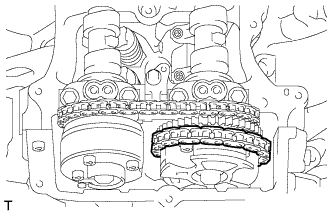 |
Снимите цепь со звездочки зубчатого колеса распредвала и установите ее на зубчатое колесо.
| 44. СНИМИТЕ КРЫШКУ ПОДШИПНИКА РАСПРЕДВАЛА (для ряда 1) |
Выверните болты и снимите крышки подшипников в порядке, показанном на рисунке. Немедленно после снятия крышки подшипника установите болты и шайбы для временного крепления кожуха распредвала в порядке, показанном на рисунке.
| *1 | Болт |
| *2 | Шайба |
| *a | Снятие детали |
| *b | Установка болтов и шайб для временного крепления кожуха распредвала |
| 45. СНИМИТЕ РАСПРЕДВАЛ № 2 |
Выверните болт натяжителя цепи № 2 в сборе.
Снимите натяжитель цепи № 2 в сборе, поднимая распредвал № 2.
 |
Подняв распредвал № 2, проденьте его через цепь № 2 и вытащите в направлении передней стороны автомобиля, чтобы снять его.
| 46. СНИМИТЕ РАСПРЕДВАЛ |
Поднимите заднюю часть распредвала, чтобы он располагался под углом.
Снимите цепь с зубчатого колеса распредвала и вытащите распредвал и цепь № 2 в направлении задней стороны автомобиля, чтобы снять их.
Подвесьте цепь с помощью веревки или аналогичного предмета.
| 47. ОТСОЕДИНИТЕ ЦЕПЬ В СБОРЕ (для ряда 2) |
Проверните коленчатый вал против часовой стрелки и совместите метку на нем с установочной меткой "0" на крышке цепного привода газораспределительного механизма.
Снимите цепь со звездочки зубчатого колеса распредвала и установите ее на зубчатое колесо.
| 48. СНИМИТЕ КРЫШКУ ПОДШИПНИКА РАСПРЕДВАЛА (для ряда 2) |
Выверните болты и снимите крышки подшипников в порядке, показанном на рисунке. Немедленно после снятия крышки подшипника установите болты и шайбы для временного крепления кожуха распредвала в порядке, показанном на рисунке.
| *1 | Болт |
| *2 | Шайба |
| *a | Снятие детали |
| *b | Установка болтов и шайб для временного крепления кожуха распредвала |
| 49. СНИМИТЕ РАСПРЕДВАЛ № 4 |
Выверните болт натяжителя цепи № 3 в сборе.
Снимите натяжитель цепи № 3 в сборе, поднимая распредвал № 4.
Подняв распредвал № 4, проденьте его через цепь № 2 и вытащите в направлении передней стороны автомобиля, чтобы снять его.
| 50. СНИМИТЕ РАСПРЕДВАЛ № 3 |
Поднимите заднюю часть распредвала, чтобы он располагался под углом.
Снимите цепь с зубчатого колеса распредвала и вытащите распредвал № 3 и цепь № 2 в направлении задней стороны автомобиля, чтобы снять их.
Подвесьте цепь с помощью веревки или аналогичного предмета.
| 51. СНИМИТЕ ЗУБЧАТОЕ КОЛЕСО РАСПРЕДВАЛА В СБОРЕ |
Зафиксируйте распредвал.
Выверните болт фланца и снимите зубчатое колесо распредвала.
| *1 | Не снимайте |
| *2 | Стопорный штифт |
| *3 | Фланцевый болт |
| 52. СНИМИТЕ ЗУБЧАТОЕ КОЛЕСО РАСПРЕДВАЛА ВЫПУСКНЫХ КЛАПАНОВ В СБОРЕ |
Зафиксируйте распредвал.
 |
Выверните болт фланца и снимите зубчатое колесо распредвала выпускных клапанов в сборе.
| *1 | Не снимайте |
| *2 | Стопорный штифт |
| *3 | Фланцевый болт |